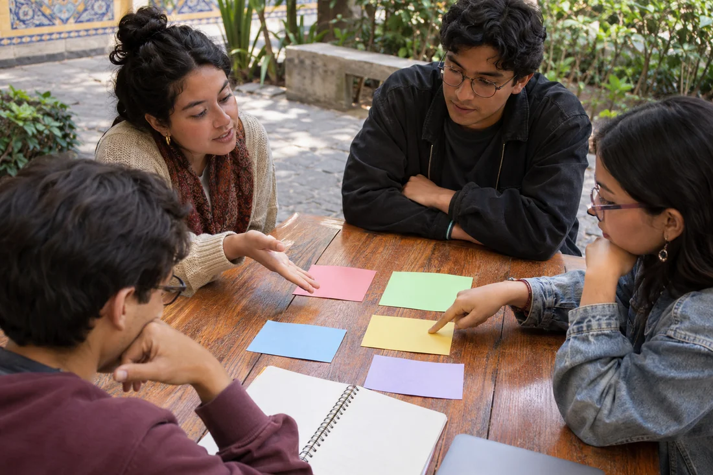

Ideas centrales
El Tema 14 relaciona la empatía con comprender tanto la perspectiva como la experiencia afectiva de otra persona. En una conversación intercultural, escuchar implica prestar atención al significado de lo que alguien dice y evitar juicios sobre su acento o su forma de expresarse (Universidad Tecmilenio, 2023b).
La empatía incluye varias formas de responder a la experiencia ajena. Dos especialmente útiles para la convivencia son la toma de perspectiva, que consiste en intentar entender cómo interpreta alguien lo que ocurre, y la preocupación empática, que implica interesarse por su bienestar. Puedo imaginar el punto de vista de otra persona y aun así equivocarme sobre lo que siente. Por eso conviene preguntarle y darle espacio para corregirme (Davis, 1983).
La escucha activa y empática permite poner en práctica esa disposición. El modelo de Bodie (2011) distingue tres componentes. Primero, percibir las palabras, el tono y las señales relevantes sin atribuirles de inmediato una intención. Después, procesar lo que se escuchó, distinguiendo el mensaje de las suposiciones propias. Por último, responder con una pregunta abierta o una paráfrasis que permita verificar qué se entendió. Por ejemplo, podemos preguntar «¿Qué parte del trabajo se te está complicando?» y luego confirmar con nuestras palabras lo que la otra persona explicó.
En un estudio experimental con 115 participantes en conversaciones iniciales, quienes recibieron respuestas de escucha activa reportaron sentirse más comprendidos que quienes recibieron consejos sin haberlos pedido o señales breves de atención (Weger et al., 2014). En un desacuerdo escolar, comprobar la perspectiva de la otra persona puede aportar información que cambie el acuerdo y permita repartir responsabilidades con mayor justicia.
Ejemplo de aplicación
En un trabajo universitario, Andrés llega tarde a dos reuniones y el equipo considera quitarle su parte. Antes de decidir, Lucía le pregunta qué está pasando. Andrés explica que su horario laboral cambió y que puede avanzar por las mañanas. Lucía confirma si entendió bien y le pregunta qué entrega puede asumir. El equipo acuerda recibir sus avances por escrito los miércoles, mantiene el mismo criterio de calidad para todos y revisa el acuerdo en una semana. Escuchar permitió encontrar una forma de participar que el equipo podía comprobar.
Por qué elegí este subtema
Elegí empatía y escucha porque en el Módulo 3 la convivencia exige tomar en cuenta la experiencia de quienes participan en una decisión. Practicar la escucha me ayuda a comprobar mis interpretaciones y a distinguir un incumplimiento observado de los motivos que le atribuyo. En la universidad y en el trabajo, esta habilidad sirve para manejar desacuerdos y formular acuerdos donde cada persona pueda expresar sus necesidades y asumir compromisos.
Galería del subtema

